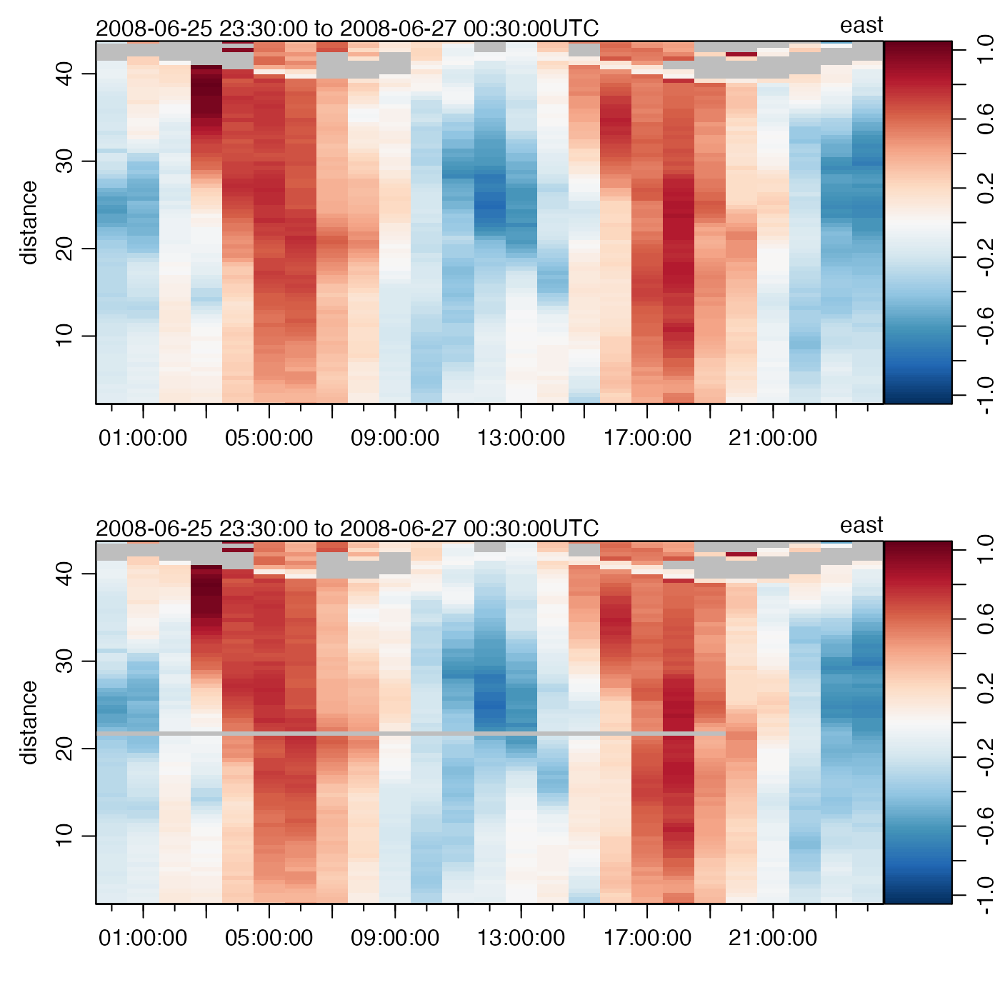

This function changes specified entries in the data-quality
flags of a adp object, which are stored within
a list named flags that resides in the metadata
slot. If the object already has a flag set up for name,
then only the specified entries are altered. If not, the flag
entry is first created and its entries set to default,
after which the entries specified by i
are changed to value.
The specification is made with i, the form of which
is determined by the data item in question. Generally,
the rules are as follows:
If the data item is a vector, then i must be (a)
an integer vector specifying indices to be set to value,
(b) a logical vector of length matching the data item, with
TRUE meaning to set the flag to value, or (c)
a function that takes an oce object as its single
argument, and returns a vector in either of the forms
just described.
If the data item is an array, then i must be
(a) a data frame of integers whose rows specify spots to change
(where the number of columns matches the number of dimensions
of the data item), (b) a logical array that has dimension equal to
that of the data item, or (c) a function that takes an oce
object as its single input and returns such a data frame or array.
See “Details” for the particular case of adp objects.
An oce object.
Character string indicating the name of the variable to be flagged. If
this variable is not contained in the object's data slot, an error is reported.
Indication of where to insert the flags; see “Description” for general rules and “Details” for rules for adp objects.
The value to be inserted in the flag.
Integer set to 0 for quiet action or to 1 for some debugging.
An object with flags set as indicated.
The only flag that may be set is v, for the array holding velocity. See “Indexing rules”, noting that adp data are stored in 3D arrays; Example 1 shows using a data frame for i, while Example 2 shows using an array.
Other functions relating to data-quality flags:
defaultFlags(),
handleFlags,adp-method,
handleFlags,argo-method,
handleFlags,ctd-method,
handleFlags,oce-method,
handleFlags,section-method,
handleFlags(),
initializeFlagScheme,ctd-method,
initializeFlagScheme,oce-method,
initializeFlagScheme,section-method,
initializeFlagSchemeInternal(),
initializeFlagScheme(),
initializeFlags,adp-method,
initializeFlags,oce-method,
initializeFlagsInternal(),
initializeFlags(),
setFlags,ctd-method,
setFlags,oce-method,
setFlags()
Other things related to adp data:
[[,adp-method,
[[<-,adp-method,
ad2cpHeaderValue(),
adp-class,
adpConvertRawToNumeric(),
adpEnsembleAverage(),
adpFlagPastBoundary(),
adp_rdi.000,
adp,
as.adp(),
beamName(),
beamToXyzAdpAD2CP(),
beamToXyzAdp(),
beamToXyzAdv(),
beamToXyz(),
beamUnspreadAdp(),
binmapAdp(),
enuToOtherAdp(),
enuToOther(),
handleFlags,adp-method,
is.ad2cp(),
plot,adp-method,
read.adp.ad2cp(),
read.adp.nortek(),
read.adp.rdi(),
read.adp.sontek.serial(),
read.adp.sontek(),
read.adp(),
read.aquadoppHR(),
read.aquadoppProfiler(),
read.aquadopp(),
rotateAboutZ(),
subset,adp-method,
subtractBottomVelocity(),
summary,adp-method,
toEnuAdp(),
toEnu(),
velocityStatistics(),
xyzToEnuAdpAD2CP(),
xyzToEnuAdp(),
xyzToEnu()
library(oce)
data(adp)
## Example 1: flag first 10 samples in a mid-depth bin of beam 1
i1 <- data.frame(1:20, 40, 1)
adpQC <- initializeFlags(adp, "v", 2)
adpQC <- setFlags(adpQC, "v", i1, 3)
adpClean1 <- handleFlags(adpQC, flags=list(3), actions=list("NA"))
par(mfrow=c(2, 1))
## Top: original, bottom: altered
plot(adp, which="u1")
plot(adpClean1, which="u1")

## Example 2: percent-good and error-beam scheme
v <- adp[["v"]]
i2 <- array(FALSE, dim=dim(v))
g <- adp[["g", "numeric"]]
# Thresholds on percent "goodness" and error "velocity"
G <- 25
V4 <- 0.45
for (k in 1:3)
i2[,,k] <- ((g[,,k]+g[,,4]) < G) | (v[,,4] > V4)
adpQC2 <- initializeFlags(adp, "v", 2)
adpQC2 <- setFlags(adpQC2, "v", i2, 3)
adpClean2 <- handleFlags(adpQC2, flags=list(3), actions=list("NA"))
## Top: original, bottom: altered
plot(adp, which="u1")
plot(adpClean2, which="u1") # differs at 8h and 20h